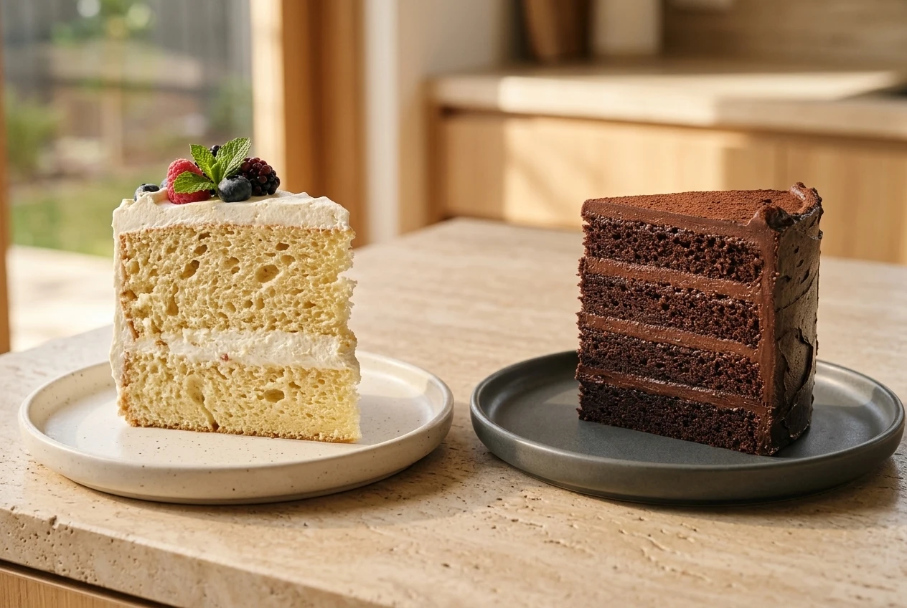
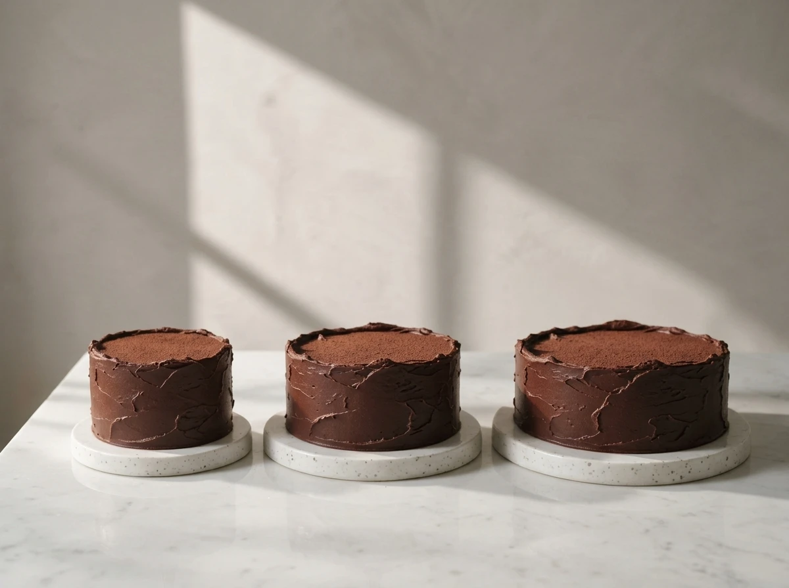

VERYGOOD JOURNAL · CAKE SIZING & PORTION GUIDE
Why a high-density chocolate sheet serves very differently from a light genoise sponge—and how to plan slices across 6-inch, 8-inch and 10-inch cakes.
Decide what a slice means before deciding how many people the cake serves. Australian cake makers use coffee portions and dessert portions to describe different proposed slice sizes,[15][16] yet diameter alone never tells the whole story.[15][16][17]
What is inside the cake matters just as much. A cake built on a dense, chocolate-rich sheet and smooth dark ganache layers satisfies guests in a much neater slice than an airy genoise sponge.[12]
WHY DENSITY CHANGES THE SERVING COUNT
Unlike a light foam sponge that requires a wide wedge, our Pavé chocolate cake is built with high-density chocolate sheets and ganache: a 6-inch cake serves 8–10, an 8-inch serves 14–18, and a 10-inch serves 24–28.

An airy foam-style sponge slice beside a compact, ganache-layered chocolate slice: higher density means a trimmer slice still feels rich and complete.[12]
If you have ever ordered a 6-inch fresh-cream sponge cake and watched four or five people finish it in one sitting, it is natural to wonder how another 6-inch cake can be listed for 8 to 10 guests. The answer lies in the structure of the cake sheet itself.[12]
King Arthur’s cake guide distinguishes light foam-style cakes—such as genoise and sponge, which rely on whipped eggs for airy volume—from richer, denser cakes built around fat, chocolate, or ganache.[12] A genoise sponge is full of tiny air pockets. Because each forkful is light and compressible, guests naturally expect a wider, taller wedge, and cutting a fragile sponge too thinly can cause the slice to tip or crumble.
Our chocolate cakes are built on a completely different foundation. Instead of an airy genoise, we bake a moist, high-density chocolate sheet and layer it with smooth dark chocolate ganache. Every slice carries real weight, deep cocoa flavour, and a velvety melt—so a neat, composed portion leaves guests thoroughly satisfied without feeling overly heavy.
SHEET STRUCTURE COMPARISON · AIRY SPONGE VS. DENSE CHOCOLATE
AIRY FOAM STRUCTURE
Leavened by whipped egg foam.[12] Light, porous, and delicate on the plate—requires wider wedges to stand upright and feel like a full dessert.
HIGH-DENSITY CRUMB
Built with dense chocolate layers and dark ganache.[12] Firm enough to slice into clean, slender portions that hold their sharp edges.
PORTION SATISFACTION
Because each bite is rich in cocoa and ganache, a trimmer slice delivers complete dessert satisfaction—yielding more servings from the same diameter.
Because our Pavé chocolate cake pairs four dense chocolate cake layers with smooth dark chocolate ganache, we portion our cakes around the richness of the crumb rather than sponge-cake dimensions.
Our 6-inch cake is designed for 8 to 10 servings, our 8-inch cake for 14 to 18 servings, and our 10-inch cake for 24 to 28 servings. Those ranges give you room to adjust slice thickness depending on whether cake is the main dessert or a sweet finish alongside coffee.

Graduated 6-inch, 8-inch, and 10-inch Pavé chocolate cakes: dense chocolate and ganache layers allow each tier to serve more guests than a light sponge.
VERY GOOD CHOCOLATE · PAVÉ CAKE SERVING GUIDE
6-INCH · SMALL GATHERINGS
8–10 Servings
Where a light 6-inch sponge may only serve 4–6, our dense 6-inch Pavé comfortably portions into 8 generous or 10 neat slices.
Ideal for family birthdays, dinner tables & intimate celebrations.
8-INCH · MEDIUM PARTIES
14–18 Servings
Balances table presence with rich, satisfying slices—giving you 14 dessert-style portions or up to 18 coffee-style slices.
Suited to milestone dinners, office celebrations & weekend gatherings.
10-INCH · LARGE EVENTS
24–28 Servings
Our largest single-tier Pavé chocolate cake, offering 24 to 28 rich portions without requiring a multi-tiered setup.
Designed for larger parties, group events & shared dessert tables.
Within each size range—such as 8 to 10 slices from a 6-inch Pavé or 14 to 18 slices from an 8-inch—where you land depends on the role the cake plays in your event. In Australian cake guides, coffee portions suit a smaller sweet finish alongside a cuppa or other desserts, while dessert portions are the larger cut used when cake is the main plated course.[15][16]
Cake from the Heart defines coffee and dessert slices using length, width, and height,[15] while Sweet Essence and LaManna note that cake height and cutting style also change the final yield.[16][17] For a simple hypothetical comparison, imagine a rectangular piece measuring 3 cm long, 2 cm wide, and 5 cm high (30 cm³): doubling the width to 4 cm (60 cm³) doubles each piece’s volume and halves the number of servings from the same cake.
HOW TO READ OUR SERVING RANGES (8–10 · 14–18 · 24–28)
Plan around the lower number (8, 14, or 24) when cake is the main seated dessert and guests want a generous wedge. Plan around the higher number (10, 18, or 28) when serving cake after a full meal, alongside coffee, or as part of a larger grazing table.[15][16]
LaManna describes wedge, slab, and geometric cutting methods,[17] and Sweet Essence notes that different cutting styles change the number of portions.[16] Even the best-sized cake can run short if the person holding the knife cuts oversized birthday wedges out of habit.
Because a ganache-layered chocolate sheet is much denser than a sponge cake, a simple patisserie habit makes every slice look sharp: dip a long, smooth blade into hot water, wipe it dry with a clean towel, and press gently down through the layers—wiping the blade again between cuts. Let the person slicing know the target serving count (for example, 8 to 10 slices on a 6-inch cake or 14 to 18 on an 8-inch cake) before the first cut is made.
SERVING & CUTTING CHECKLIST · 3 PRACTICAL TIPS
Choose 6-inch (8–10), 8-inch (14–18), or 10-inch (24–28) based on whether guests are having a post-dinner coffee slice or a full dessert plate.[15]
Tell whoever is portioning the cake how many slices the tier is meant to yield before they make the first wedge or slab cut.[16][17]
Warm the knife in hot water and wipe it dry between slices so the dense chocolate sheet and dark ganache cut cleanly without dragging.
VERYGOOD CHOCOLATE · SYDNEY CELEBRATION CAKES
[12] King Arthur Baking — Cake Guide (https://www.kingarthurbaking.com/learn/guides/cake)
[15] Cake from the Heart — Cake Sizing & Configurations (https://www.cakefromtheheart.com.au/cake-sizing.html)
[16] Sweet Essence Cakes and Desserts — Cake Serving Guide (https://www.sweetessence.com.au/pages/cake-serving-numbers)
[17] LaManna — Cake Cutting Guide (https://www.lamanna.com.au/cake-cutting-guide)